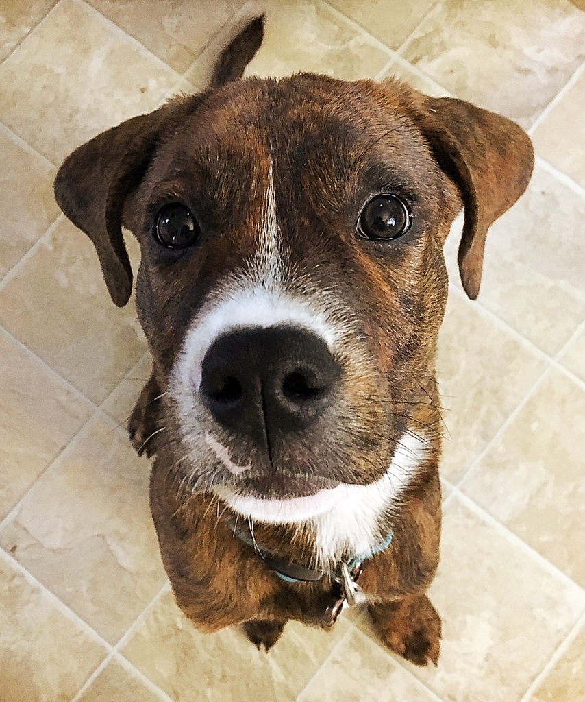

## Well hello, world.
I am a software developer based in Durham, NC. Right now I am working mostly with Javascript (Backbone and MarionnetteJS), PHP, and Jenkins. I'm also an active member of the Ruby community and enjoy attending open source events like Ruby for Good and local meetups. I'm also a teaching assistant at University of North Carolina Chapel Hill's Coding Bootcamp and Triangle Railsbridge.
Read more about my life and code on my Github, blog, or LinkedIn.
I also have a dog named Okra who helps track down code smells:
